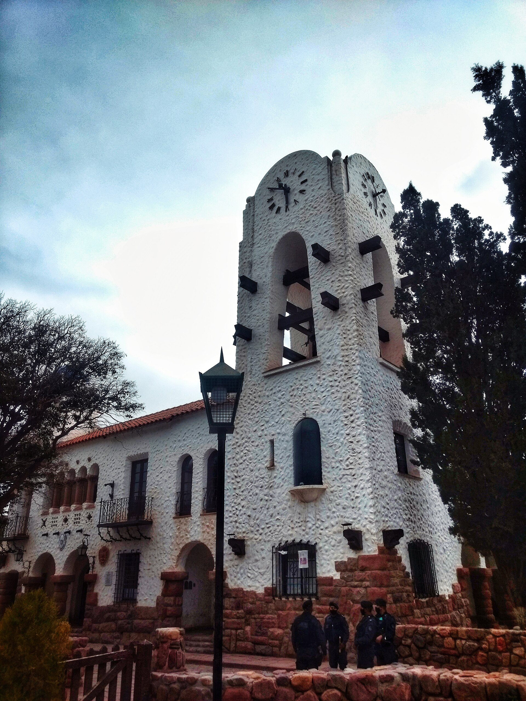

Subir la Quebrada
SS. Jujuy → Tilcara-
07:45
Terminal de Ómnibus
Llegá con margen: el boleto se compra en boletería o a bordo según la empresa.
Margen 15 min -
08:00
Colectivo a Tilcara
Santa Ana, local por Purmamarca hacia Humahuaca. Bajada en Tilcara ~09:50.
Horario publicado -
—
✳ yapa
Pasás por Maimará ~09:10: sentate del lado izquierdo, la Paleta del Pintor se enciende con la luz de la mañana.
Cierra porque no cambia tu plan: es la misma butaca, en el mismo servicio. -
10:30
Pucará de Tilcara
La fortaleza sobre el río Grande. 2 h con museo y senderos; queda a 15 min a pie del centro.

Tilcara · 2.500 msnm -
17:00
Garganta del Diablo
El cañón y la cascada al caer la tarde. Consultá el estado del camino en el pueblo; llevá agua.
Traslado local
Tilcara · 2.900 msnm
Día 1 · 4 puntos · ~75 km por RN 9
Dormís en Tilcara. El día cierra sin apuros: la Garganta es la última salida posible con luz.
Purmamarca y subida final
Tilcara → Purmamarca → Humahuaca-
08:40
Colectivo a Purmamarca
Evelia, local por Purmamarca en dirección Terminal (~30 min). Los servicios "por Purmamarca" entran al pueblo: bajás en la parada del centro, no en el cruce de la RN 9.
Horario publicadoBajada en el pueblo -
10:00
Cerro de los Siete Colores
Paseo de los Colorados + pueblo y feria. 3 h tranquilas; la luz de la mañana es la buena.

Purmamarca · 2.324 msnm -
—
✳ yapa
Almorzá tranquilo en el pueblo: el servicio de las 14:40 sale de la parada del centro, no del cruce. Ojo si cambiás de plan: los rápidos solo frenan en el cruce de la RN 9 (~2 km) — para ese tramo el plan propone remis, no caminar la banquina.
Cierra porque el plan usa el servicio que entra al pueblo: la vuelta a pie al cruce queda como plan B con remis, no como recomendación. -
14:40
Colectivo a Humahuaca
Evelia desde la parada del pueblo (local por Purmamarca). Llegada ~16:00.
Horario publicado -
16:30
Humahuaca al atardecer
El Monumento a los Héroes de la Independencia y el casco. Subida a pie con pendiente.

Humahuaca · 2.939 msnm
Día 2 · 3 puntos · ~85 km por RN 9
Dormís en Humahuaca. Último servicio de subida usado; mañana el Hornocal madruga.
El Hornocal y la vuelta
Humahuaca → Hornocal → SS. Jujuy-
08:30
Traslado al mirador
Los traslados compartidos salen del centro de Humahuaca cuando se completan; ~45 min de camino de cornisa. Acordá la hora de regreso con el chofer antes de subir — es tu única bajada.
Traslado localSin horario fijoVerificar regreso -
09:30
Serranía del Hornocal
El mirador de los catorce colores a 4.350 m. Caminá despacio: la altura se siente.

Humahuaca · 4.350 msnm -
—
✳ yapa
Pedile al chofer la parada del mirador intermedio: la serranía entera aparece de golpe, 200 m antes del final.
Cierra porque es la misma subida, sin desvío ni tiempo extra. -
15:10
Colectivo de regreso
Evelia, Humahuaca → Terminal SS. Jujuy (~2 h 45 por la RN 9). Si el traslado baja ~13:00, quedan ~2 h de margen en el pueblo; si lo perdés, siguen el 15:50 de Jama Bus y el 16:15 directo de Panamericano.
Horario publicado -
17:55
Terminal de Ómnibus
Llegada estimada. La travesía cierra: tres días, dos noches de norte, cero auto.
Hora estimada
Día 3 · 3 puntos · ~215 km ida y vuelta
Fin de la travesía. Si perdés el 15:10, siguen el 15:50, el 16:15 y el 17:15 — y el plan te lo dice antes, no en la parada.
Así se siente una travesía que cierra.
Cada hora tiene su fuente: publicada, estimada o por confirmar. Las yapas entran solo cuando el reloj del colectivo las deja pasar.